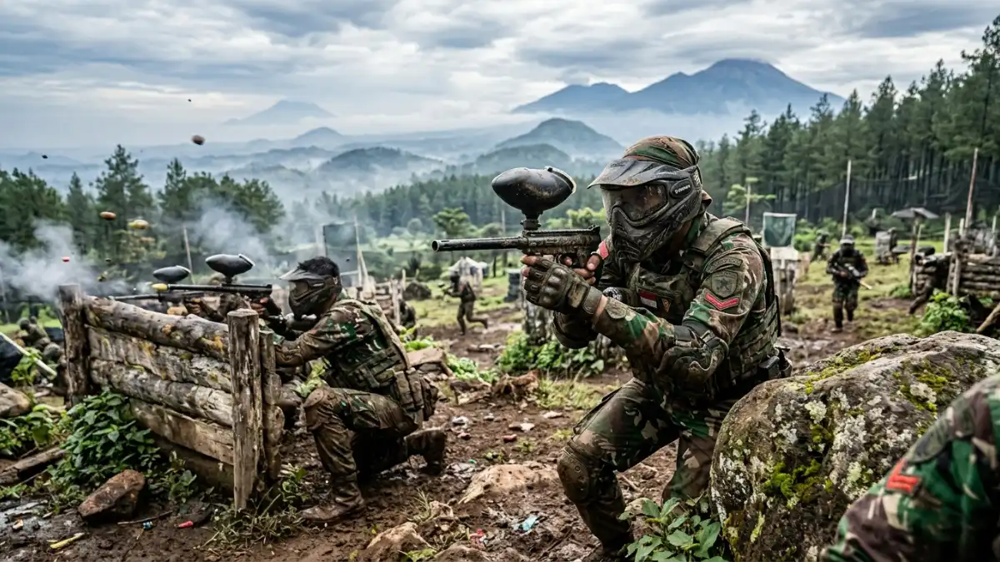
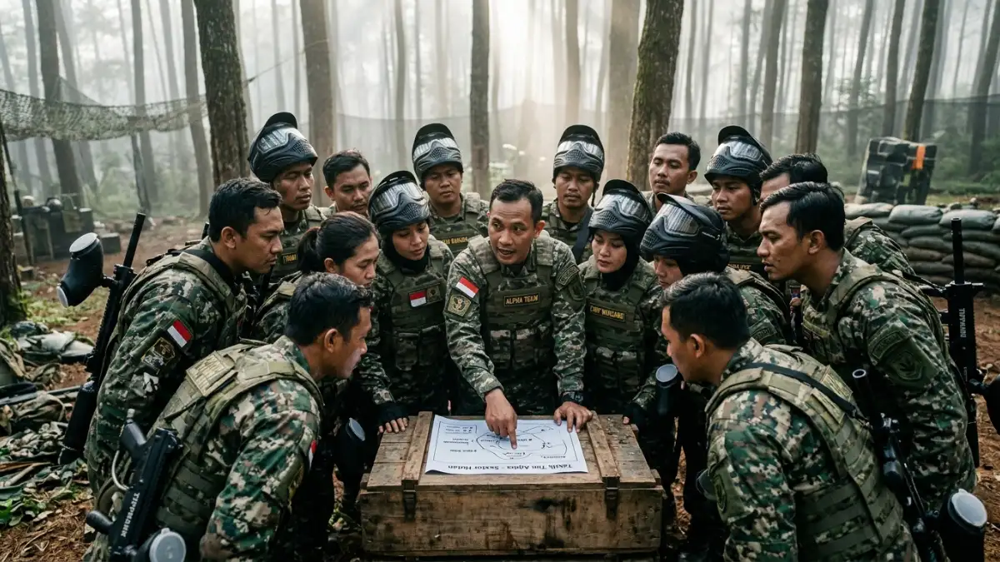

Ilustrasi AI keseruan war game paintball di alam terbuka Batu.War game paintball di alam terbuka Batu adalah pengalaman bermain strategi tim menggunakan peluru cat di area luar ruangan dengan rintangan alami maupun buatan, memberi sensasi menegangkan sekaligus menyenangkan bagi peserta.
- Apa Itu War Game Paintball di Alam Terbuka?
- Untuk Siapa Pengalaman War Game Paintball Ini Cocok?
- Bagaimana Pengalaman Bermain War Game Paintball di Alam Terbuka Batu?
- Apa Saja Jenis Mode Permainan War Game Paintball?
- Mengapa Alam Terbuka Batu Cocok untuk War Game Paintball?
- Apa Manfaat Mengikuti War Game Paintball Secara Berkelompok?
- Apa Kesalahan Umum yang Perlu Dihindari Saat War Game?
- Bagaimana Tips agar Sesi War Game Paintball Terasa Maksimal?
- Kesimpulan
- FAQ
Apa Itu War Game Paintball di Alam Terbuka?
War game paintball di alam terbuka adalah permainan simulasi pertempuran menggunakan senjata paintball dan peluru cat, dimainkan secara tim di area luar ruangan dengan berbagai rintangan sebagai perlindungan.
Berbeda dengan sesi paintball santai yang hanya berfokus pada latihan menembak, war game biasanya melibatkan skenario permainan tertentu, seperti merebut bendera lawan atau mempertahankan wilayah, sehingga peserta perlu menyusun strategi bersama tim.
Alam terbuka Batu, dengan kontur tanah yang bervariasi dan udara sejuk pegunungan, sering dipilih sebagai lokasi war game karena memberi nuansa medan yang lebih menantang dibanding arena datar biasa.
Untuk Siapa Pengalaman War Game Paintball Ini Cocok?
War game paintball di alam terbuka Batu cocok untuk kelompok yang menyukai aktivitas strategi tim, tantangan fisik, dan suasana kompetitif yang seru namun tetap terkendali.
Kelompok yang umum menikmati pengalaman ini:
- Komunitas pecinta olahraga taktis dan aktivitas outdoor
- Rombongan kantor yang ingin variasi kegiatan team building bernuansa kompetitif
- Kelompok pertemanan yang mencari pengalaman baru saat berlibur ke Batu
- Peserta yang sudah familiar dengan paintball dasar dan ingin mencoba tantangan lebih tinggi
Bagaimana Pengalaman Bermain War Game Paintball di Alam Terbuka Batu?
Pengalaman bermain war game paintball di alam terbuka Batu umumnya diawali dengan briefing strategi, pembagian tim, lalu dilanjutkan sesi permainan sesuai mode yang dipilih.
Tahapan umum yang biasanya dilalui peserta:
- Peserta menerima briefing keselamatan dan penjelasan mode permainan dari instruktur
- Tim dibagi menjadi dua kelompok atau lebih, tergantung skenario yang dipilih
- Peserta menyusun strategi singkat sebelum memasuki area bermain
- Sesi permainan berlangsung sesuai durasi dan mode yang telah ditentukan
- Instruktur mengawasi jalannya permainan dan menghentikan sesi jika diperlukan
Suasana alam terbuka Batu, dengan pepohonan dan kontur tanah yang bervariasi, membuat setiap sesi war game terasa berbeda dibanding sesi sebelumnya karena posisi rintangan alami dapat memengaruhi strategi tim.
Apa Saja Jenis Mode Permainan War Game Paintball?
Jenis mode permainan war game paintball yang umum ditawarkan meliputi capture the flag, elimination, dan defend the base, masing-masing dengan aturan dan tujuan berbeda.
Mode permainan yang umum dijumpai:
- Capture the flag — setiap tim berusaha merebut bendera lawan sambil mempertahankan bendera sendiri
- Elimination — permainan berakhir ketika seluruh anggota satu tim berhasil dieliminasi
- Defend the base — satu tim bertahan di area tertentu sementara tim lain berusaha merebutnya
- Free for all — setiap peserta bermain secara individu tanpa pembagian tim tetap
Pemilihan mode biasanya disesuaikan dengan jumlah peserta, tingkat pengalaman kelompok, serta preferensi rombongan terhadap tingkat kompetisi yang diinginkan.

Ilustrasi AI. Peserta menyusun strategi bersama tim sebelum memulai permainan war game paintball.Mengapa Alam Terbuka Batu Cocok untuk War Game Paintball?
Alam terbuka Batu cocok untuk war game paintball karena kontur tanah yang bervariasi, udara sejuk pegunungan, dan ketersediaan rintangan alami yang mendukung strategi permainan tim.
Beberapa faktor yang mendukung kecocokan ini:
- Suhu udara yang sejuk membuat aktivitas fisik terasa lebih nyaman dibanding dataran rendah
- Kontur tanah berbukit menambah dimensi taktis dalam permainan
- Pepohonan dan vegetasi alami berfungsi sebagai tempat berlindung tambahan
- Suasana alam memberi pengalaman yang lebih segar dibanding arena indoor konvensional
Apa Manfaat Mengikuti War Game Paintball Secara Berkelompok?
Manfaat mengikuti war game paintball secara berkelompok meliputi peningkatan kerja sama tim, kemampuan pengambilan keputusan cepat, dan pelepasan penat melalui aktivitas fisik yang seru.
Beberapa manfaat yang umum dirasakan peserta:
- Melatih komunikasi dan koordinasi antaranggota tim selama permainan berlangsung
- Mengasah kemampuan mengambil keputusan cepat dalam situasi yang berubah dinamis
- Memberi variasi aktivitas fisik yang berbeda dari rutinitas sehari-hari
- Menciptakan momen kebersamaan yang dapat mempererat hubungan antaranggota kelompok
Apa Kesalahan Umum yang Perlu Dihindari Saat War Game?
Kesalahan umum yang perlu dihindari saat war game paintball adalah tidak mengikuti briefing strategi, mengabaikan batas zona aman, dan kurang persiapan fisik sebelum bermain.
Kesalahan yang sering terjadi:
- Tidak memperhatikan penjelasan mode permainan sehingga bingung saat sesi dimulai
- Keluar dari batas zona aman yang telah ditentukan instruktur
- Terlalu memaksakan diri secara fisik tanpa mempertimbangkan kondisi tubuh
- Mengabaikan kerja sama tim dan bermain terlalu individualis dalam mode yang membutuhkan strategi kelompok
Bagaimana Tips agar Sesi War Game Paintball Terasa Maksimal?
Tips agar sesi war game paintball terasa maksimal meliputi memahami mode permainan sebelum mulai, menjaga komunikasi tim, dan menyesuaikan strategi dengan kondisi medan alam terbuka.
Tips praktis yang dapat diikuti:
- Pelajari aturan mode permainan dengan seksama sebelum sesi dimulai
- Bangun komunikasi aktif dengan anggota tim selama permainan berlangsung
- Manfaatkan rintangan alami seperti pepohonan untuk strategi bertahan atau menyerang
- Jaga stamina dengan istirahat cukup sebelum mengikuti sesi war game
- Ikuti seluruh arahan instruktur terkait batas zona dan aturan keselamatan
Kesimpulan
War game paintball di alam terbuka Batu menawarkan pengalaman bermain strategi tim yang seru sekaligus menantang, didukung suasana alam pegunungan yang segar.
Untuk pengalaman terbaik, pahami mode permainan sebelum mulai, jaga komunikasi tim, dan selalu ikuti arahan keselamatan dari instruktur.
FAQ